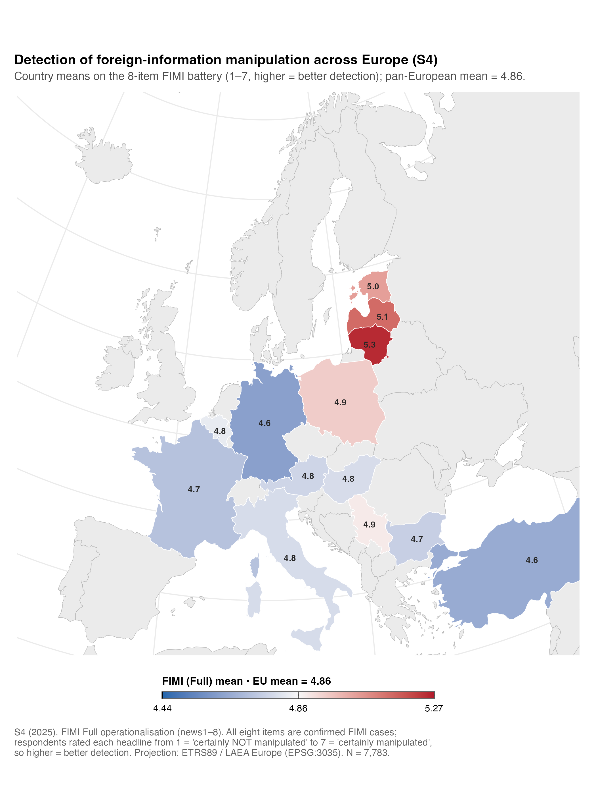
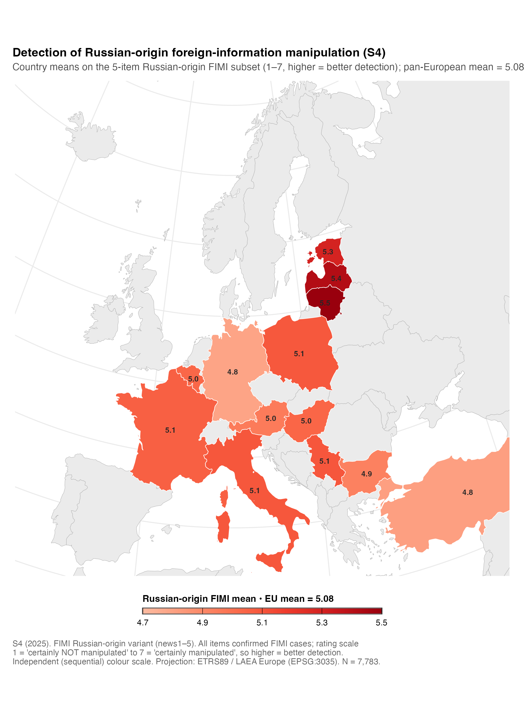
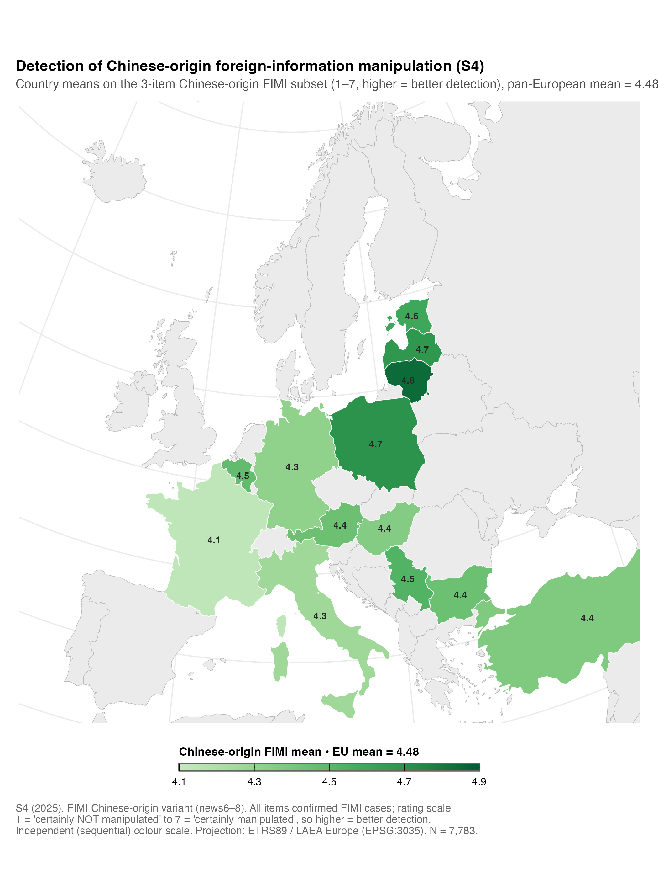
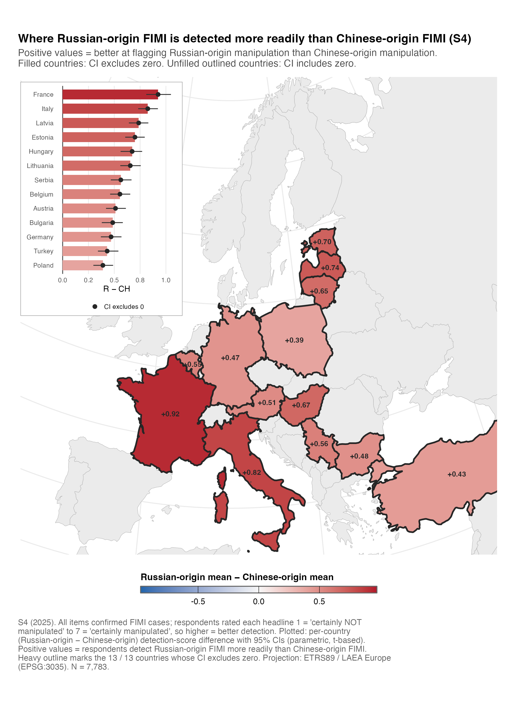
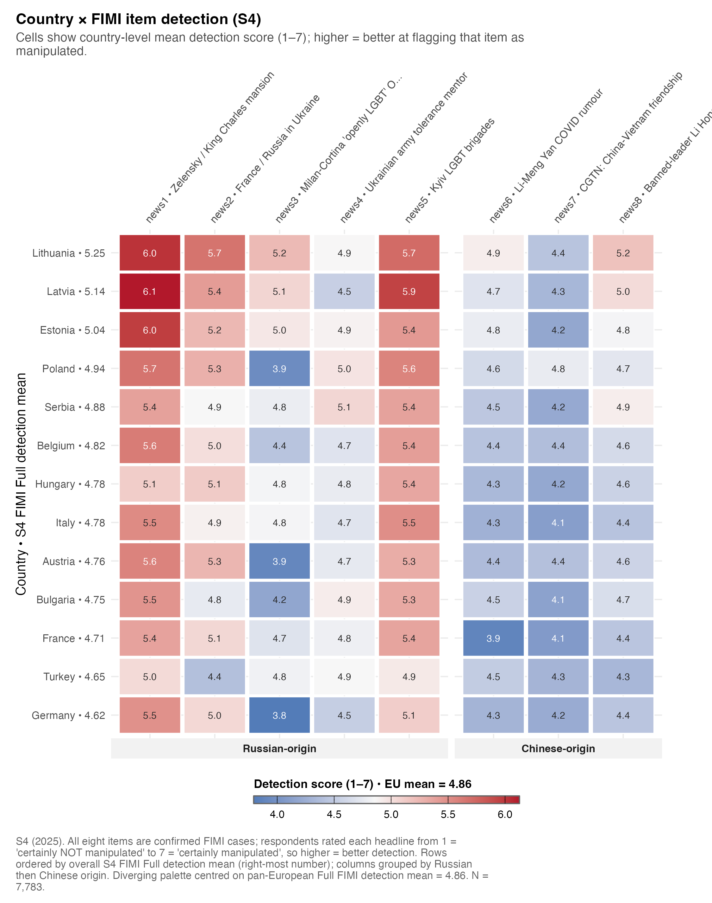

FIMI detection across Europe
Where confirmed foreign manipulation is recognised, how that shifts by source origin, and which individual cases are blind spots
What “detection” means here
Every figure on this page plots FIMI detection. All eight S4 news items are confirmed foreign-manipulation cases; respondents rated each from 1 = certainly not manipulated to 7 = certainly manipulated. Higher country means = better detection; lower means a larger detection blind spot. This is the opposite direction to the receptivity domains on the Receptivity profiles page, and the two are never combined.
Warning
Detection differences are read as policy-relevant blind spots, not judgements on a population. Country results are evidence for prioritisation and follow-up, not verdicts.
Detection of confirmed FIMI cases varies across Europe
The Baltic cluster shows the highest Full FIMI detection — Lithuania (5.25), Latvia (5.14), Estonia (5.04) — while Germany (4.62), Turkey (4.65), and France (4.71) show the lowest in the current 13-country set. The spread is wide enough to justify a standing audience-side indicator.
| Country | Cluster | N | Full FIMI detection | 95% CI |
|---|---|---|---|---|
| Lithuania | Baltic | 593 | 5.25 | [5.17, 5.34] |
| Latvia | Baltic | 596 | 5.14 | [5.07, 5.21] |
| Estonia | Baltic | 604 | 5.04 | [4.96, 5.12] |
| Poland | Central-East | 600 | 4.94 | [4.86, 5.02] |
| Serbia | Southern | 606 | 4.88 | [4.80, 4.95] |
| Belgium | Western | 595 | 4.82 | [4.75, 4.89] |
| Hungary | Central-East | 599 | 4.78 | [4.70, 4.87] |
| Italy | Southern | 606 | 4.78 | [4.71, 4.86] |
| Austria | Western | 599 | 4.76 | [4.69, 4.83] |
| Bulgaria | Central-East | 592 | 4.75 | [4.66, 4.83] |
| France | Western | 596 | 4.71 | [4.64, 4.79] |
| Turkey | Southern | 599 | 4.65 | [4.55, 4.74] |
| Germany | Western | 598 | 4.62 | [4.54, 4.69] |
Code
scripts/policy_report/F-07_overall_fimi_choropleth.R
#!/usr/bin/env Rscript
#' F-07 — Hero choropleth: overall FIMI (Full operationalisation) across S4.
#'
#' Spec: ggplot2 + geom_sf choropleth, diverging palette centred on EU mean,
#' one-decimal labels, EPSG:3035 Lambert Azimuthal projection.
#'
#' Source: outputs/policy_report/tables/s4_country_means_fimi.csv (Full variant)
#' outputs/policy_report/tables/s4_eu_pooled_benchmarks.csv (EU mid)
#' Output: outputs/policy_report/figures/F-07_overall_fimi_choropleth.{png,pdf,rds}
suppressPackageStartupMessages({
library(ggplot2)
library(dplyr)
library(readr)
library(sf)
library(here)
})
source(here::here("scripts", "policy_report", "_theme.R"))
source(here::here("scripts", "policy_report", "_helpers_geo.R"))
SCRIPT_ID <- "F-07_overall_fimi_choropleth"
SOURCE_CSV <- here::here("outputs", "policy_report", "tables",
"s4_country_means_fimi.csv")
EU_CSV <- here::here("outputs", "policy_report", "tables",
"s4_eu_pooled_benchmarks.csv")
OUT_BASE <- file.path(POLICY_REPORT_FIG_DIR, SCRIPT_ID)
set.seed(42)
# ---------------------------------------------------------------------------
# Load
# ---------------------------------------------------------------------------
dat_all <- readr::read_csv(SOURCE_CSV, show_col_types = FALSE)
policy_report_check_input(dat_all, SOURCE_CSV)
dat <- dat_all %>% dplyr::filter(fimi_version == "full")
if (nrow(dat) == 0L) {
stop("F-07: zero rows after filtering to fimi_version == 'full'.",
call. = FALSE)
}
eu <- readr::read_csv(EU_CSV, show_col_types = FALSE)
eu_mean <- eu %>%
dplyr::filter(construct_id == "fimi_full") %>%
dplyr::pull(mean)
if (length(eu_mean) != 1L || is.na(eu_mean)) {
stop("F-07: could not locate EU pooled FIMI-Full mean.", call. = FALSE)
}
# ---------------------------------------------------------------------------
# Build choropleth
# ---------------------------------------------------------------------------
# Symmetric limits around EU mean.
spread <- max(abs(range(dat$mean, na.rm = TRUE) - eu_mean)) * 1.05
lim <- c(eu_mean - spread, eu_mean + spread)
scale <- policy_report_scale_diverging(
midpoint = eu_mean,
limits = lim,
label = sprintf("FIMI (Full) mean • EU mean = %.2f", eu_mean),
breaks = c(lim[1], eu_mean, lim[2]),
labels = sprintf("%.2f", c(lim[1], eu_mean, lim[2]))
)
p <- build_choropleth(
values = dat,
value_col = "mean",
scale = scale,
label_fmt = "%.1f",
script_id = SCRIPT_ID
)
caption <- policy_report_caption(
source = "outputs/policy_report/tables/s4_country_means_fimi.csv",
n = sum(dat$n),
script = paste0(SCRIPT_ID, ".R"),
prefix = "S4 (2025). FIMI Full operationalisation (news1–8). All eight items are confirmed FIMI cases; respondents rated each headline from 1 = 'certainly NOT manipulated' to 7 = 'certainly manipulated', so higher = better detection. Projection: ETRS89 / LAEA Europe (EPSG:3035)."
)
p <- p +
ggplot2::labs(
title = "Detection of foreign-information manipulation across Europe (S4)",
subtitle = sprintf("Country means on the 8-item FIMI battery (1–7, higher = better detection); pan-European mean = %.2f.",
eu_mean),
caption = caption
)
dim_p <- POLICY_REPORT_FIGURE_DIMENSIONS$full_page
paths <- safe_ggsave_rds(p, OUT_BASE,
width = dim_p$width,
height = dim_p$height)
policy_report_log_outputs(
SCRIPT_ID, paths, input_rows = nrow(dat),
extra = c(sprintf("EU mean (FIMI Full) = %.3f", eu_mean),
sprintf("Country range = [%.2f, %.2f]",
min(dat$mean), max(dat$mean)),
sprintf("Projection: EPSG:%d (Lambert Azimuthal Equal Area)",
POLICY_REPORT_PROJ_LAEA),
sprintf("Join misses: %s",
paste(attr(p, "join_miss"), collapse = ", "))))Source origin changes what audiences detect
Splitting the criterion by the manipulating actor reveals a systematic asymmetry: in all 13 countries, Russian-origin FIMI is detected more readily than Chinese-origin FIMI. The two maps use independent colour scales so within-source variation is legible.


The paired (within-respondent) Russian − Chinese difference is positive everywhere, and every confidence interval excludes zero. The largest gap is in France (+0.92), then Italy (+0.82), Latvia (+0.74), Estonia (+0.70), and Hungary (+0.67); the smallest is Poland (+0.39).

| Country | Cluster | Russian-origin | Chinese-origin | R − CH | 95% CI | CI excl. 0 |
|---|---|---|---|---|---|---|
| France | Western | 5.06 | 4.13 | 0.92 | [0.81, 1.05] | yes |
| Italy | Southern | 5.09 | 4.27 | 0.82 | [0.73, 0.92] | yes |
| Latvia | Baltic | 5.42 | 4.68 | 0.74 | [0.64, 0.83] | yes |
| Estonia | Baltic | 5.30 | 4.60 | 0.70 | [0.61, 0.79] | yes |
| Hungary | Central-East | 5.04 | 4.36 | 0.67 | [0.56, 0.77] | yes |
| Lithuania | Baltic | 5.50 | 4.84 | 0.65 | [0.56, 0.76] | yes |
| Serbia | Southern | 5.09 | 4.53 | 0.56 | [0.47, 0.67] | yes |
| Belgium | Western | 5.03 | 4.48 | 0.55 | [0.46, 0.65] | yes |
| Austria | Western | 4.96 | 4.44 | 0.51 | [0.42, 0.61] | yes |
| Bulgaria | Central-East | 4.93 | 4.45 | 0.48 | [0.38, 0.58] | yes |
| Germany | Western | 4.79 | 4.32 | 0.47 | [0.37, 0.57] | yes |
| Turkey | Southern | 4.81 | 4.38 | 0.43 | [0.34, 0.54] | yes |
| Poland | Central-East | 5.09 | 4.70 | 0.39 | [0.30, 0.49] | yes |
ImportantSource-specific caveat
This result is bounded by the implemented item bank. It compares the specific Russian- and Chinese-origin cases that were fielded; it does not show that Russian FIMI is harmless, nor does it generalise to all Russian, Chinese, domestic, or other foreign-origin manipulation. Treat the Chinese-origin blind spot as a monitoring hypothesis for refreshed item banks and narrative review (ShadishCookCampbell2002?).
Code
scripts/policy_report/F-12_russian_minus_chinese_diff.R
#!/usr/bin/env Rscript
#' F-12 — Russian minus Chinese FIMI difference choropleth.
#'
#' Spec: choropleth with divergent palette centred on zero; countries where the
#' bootstrapped 95% CI excludes zero are outlined; others are unfilled. Include
#' an inset ranked bar.
#'
#' Source: outputs/policy_report/tables/s4_country_fimi_difference.csv
#' Output: outputs/policy_report/figures/F-12_russian_minus_chinese_diff.{png,pdf,rds}
suppressPackageStartupMessages({
library(ggplot2)
library(dplyr)
library(readr)
library(sf)
library(here)
library(patchwork)
})
source(here::here("scripts", "policy_report", "_theme.R"))
source(here::here("scripts", "policy_report", "_helpers_geo.R"))
SCRIPT_ID <- "F-12_russian_minus_chinese_diff"
SOURCE_CSV <- here::here("outputs", "policy_report", "tables",
"s4_country_fimi_difference.csv")
OUT_BASE <- file.path(POLICY_REPORT_FIG_DIR, SCRIPT_ID)
set.seed(42)
dat <- readr::read_csv(SOURCE_CSV, show_col_types = FALSE)
policy_report_check_input(dat, SOURCE_CSV)
# ---------------------------------------------------------------------------
# Map panel
# ---------------------------------------------------------------------------
geoms <- load_country_geometries()
s4 <- geoms$s4
back <- geoms$backdrop
joined <- s4 %>%
dplyr::left_join(
dat %>% dplyr::select(country_iso3, difference, ci_excludes_zero,
ci_lower, ci_upper, mean_R, mean_CH, n),
by = "country_iso3"
)
# Per spec: fill only countries whose CI excludes zero, outline the rest.
joined$fill_value <- ifelse(isTRUE(joined$ci_excludes_zero) |
(joined$ci_excludes_zero %in% TRUE),
joined$difference, NA_real_)
abs_max <- max(abs(joined$difference), na.rm = TRUE) * 1.05
diverging <- ggplot2::scale_fill_gradient2(
name = "Russian-origin mean − Chinese-origin mean",
low = "#2166AC", mid = "#F7F7F7", high = "#B2182B",
midpoint = 0,
limits = c(-abs_max, abs_max),
na.value = "white",
guide = ggplot2::guide_colorbar(
title.position = "top",
barwidth = ggplot2::unit(16, "lines"),
barheight = ggplot2::unit(0.45, "lines"),
ticks.colour = "black",
frame.colour = "grey40"
)
)
map_panel <- ggplot2::ggplot()
if (!is.null(back)) {
map_panel <- map_panel +
ggplot2::geom_sf(data = back, fill = "grey92",
colour = "grey70", linewidth = 0.15)
}
# Light outline for all S4 countries (those with CI including zero will only
# show this outline + white fill).
map_panel <- map_panel +
ggplot2::geom_sf(
data = joined[joined$in_s4 & !is.na(joined$difference), , drop = FALSE],
ggplot2::aes(fill = fill_value),
colour = "grey55", linewidth = 0.25
) +
# Heavier outline for countries whose CI excludes zero.
ggplot2::geom_sf(
data = joined[joined$in_s4 &
!is.na(joined$difference) &
(joined$ci_excludes_zero %in% TRUE), , drop = FALSE],
fill = NA, colour = "grey15", linewidth = 0.75
) +
diverging
# Country mean labels.
lbl_dat <- joined %>%
dplyr::filter(in_s4 & !is.na(difference))
if (nrow(lbl_dat) > 0L) {
lbl_pts <- policy_report_label_points(lbl_dat)
lbl_pts$.lbl <- sprintf("%+.2f", lbl_pts$difference)
map_panel <- map_panel + ggplot2::geom_text(
data = lbl_pts,
ggplot2::aes(x = .x, y = .y, label = .lbl),
family = .policy_report_resolve_font(POLICY_REPORT_BASE_FONT),
size = 2.5, colour = "grey15", fontface = "bold"
)
}
map_panel <- map_panel +
ggplot2::coord_sf(crs = sf::st_crs(POLICY_REPORT_PROJ_LAEA),
xlim = c(2.3e6, 6.9e6),
ylim = c(1.5e6, 5.4e6),
expand = FALSE) +
theme_policy_report_map(base_size = 10) +
ggplot2::theme(legend.position = "bottom")
# ---------------------------------------------------------------------------
# Inset: ranked bar chart
# ---------------------------------------------------------------------------
bar_dat <- dat %>%
dplyr::arrange(difference) %>%
dplyr::mutate(country_name = factor(country_name, levels = country_name),
fill_value = ifelse(ci_excludes_zero, difference, NA_real_),
stripe = ifelse(ci_excludes_zero, "CI excludes 0",
"CI includes 0"))
inset <- ggplot2::ggplot(bar_dat,
ggplot2::aes(y = country_name, x = difference)) +
ggplot2::geom_vline(xintercept = 0, colour = "grey30",
linewidth = 0.4) +
ggplot2::geom_col(ggplot2::aes(fill = fill_value), colour = NA,
width = 0.7) +
ggplot2::geom_segment(
ggplot2::aes(xend = ci_lower, x = ci_upper, yend = country_name),
linewidth = 0.4, colour = "grey20"
) +
ggplot2::geom_point(ggplot2::aes(shape = stripe),
colour = "grey15", size = 1.5, fill = "white") +
ggplot2::scale_shape_manual(values = c("CI excludes 0" = 19,
"CI includes 0" = 1),
name = NULL) +
diverging +
ggplot2::guides(fill = "none") +
ggplot2::scale_x_continuous(labels = scales::label_number(accuracy = 0.1)) +
ggplot2::labs(x = "R − CH", y = NULL) +
theme_policy_report(base_size = 8) +
ggplot2::theme(
legend.position = "bottom",
legend.key.size = ggplot2::unit(0.7, "lines"),
legend.margin = ggplot2::margin(t = 0, b = 0),
panel.grid.major.y = ggplot2::element_blank(),
plot.background = ggplot2::element_rect(fill = "white",
colour = "grey60",
linewidth = 0.4),
plot.margin = ggplot2::margin(4, 6, 4, 6)
)
# ---------------------------------------------------------------------------
# Compose: map with inset (top-left of map).
# ---------------------------------------------------------------------------
caption <- policy_report_caption(
source = "outputs/policy_report/tables/s4_country_fimi_difference.csv",
n = sum(dat$n),
script = paste0(SCRIPT_ID, ".R"),
prefix = sprintf("S4 (2025). All items confirmed FIMI cases; respondents rated each headline 1 = 'certainly NOT manipulated' to 7 = 'certainly manipulated', so higher = better detection. Plotted: per-country (Russian-origin − Chinese-origin) detection-score difference with 95%% CIs (parametric, t-based). Positive values = respondents detect Russian-origin FIMI more readily than Chinese-origin FIMI. Heavy outline marks the %d / %d countries whose CI excludes zero. Projection: ETRS89 / LAEA Europe (EPSG:3035).",
sum(dat$ci_excludes_zero, na.rm = TRUE), nrow(dat))
)
main <- map_panel +
ggplot2::labs(
title = "Where Russian-origin FIMI is detected more readily than Chinese-origin FIMI (S4)",
subtitle = policy_report_wrap("Positive values = better at flagging Russian-origin manipulation than Chinese-origin manipulation. Filled countries: CI excludes zero. Unfilled outlined countries: CI includes zero.", width = 100),
caption = caption
)
final <- main + patchwork::inset_element(
inset,
left = 0.00, bottom = 0.50, right = 0.34, top = 0.99,
align_to = "panel"
)
dim_p <- POLICY_REPORT_FIGURE_DIMENSIONS$full_page
paths <- safe_ggsave_rds(final, OUT_BASE,
width = dim_p$width,
height = dim_p$height)
n_excl <- sum(dat$ci_excludes_zero, na.rm = TRUE)
policy_report_log_outputs(
SCRIPT_ID, paths, input_rows = nrow(dat),
extra = c(sprintf("Countries with CI excluding zero: %d / %d", n_excl, nrow(dat)),
sprintf("Difference range = [%+.3f, %+.3f]",
min(dat$difference), max(dat$difference)),
sprintf("Projection: EPSG:%d", POLICY_REPORT_PROJ_LAEA))
)Which individual cases are blind spots
Some FIMI cases are detected consistently across countries; others show strong regional blind spots. The country-by-item heatmap is the diagnostic bridge between survey monitoring and narrative analysis: the aggregate score is useful for headline monitoring, but item-level patterns identify which specific cases or source contexts need follow-up testing, translation review, or narrative monitoring.

Code
scripts/policy_report/F-13_country_item_heatmap.R
#!/usr/bin/env Rscript
#' F-13 — Country × FIMI item heatmap.
#'
#' Spec: rows ordered by overall S4 FIMI mean (Full variant, from
#' `s4_country_means_fimi.csv`); columns ordered by origin (Russian / Chinese)
#' then truth_value; cell labels to one decimal.
#'
#' Source: outputs/policy_report/tables/s4_country_item_means.csv
#' outputs/policy_report/tables/s4_country_means_fimi.csv (Full)
#' Output: outputs/policy_report/figures/F-13_country_item_heatmap.{png,pdf,rds}
suppressPackageStartupMessages({
library(ggplot2)
library(dplyr)
library(readr)
library(here)
})
source(here::here("scripts", "policy_report", "_theme.R"))
source(here::here("scripts", "policy_report", "_helpers_heatmap.R"))
SCRIPT_ID <- "F-13_country_item_heatmap"
SOURCE_CSV <- here::here("outputs", "policy_report", "tables",
"s4_country_item_means.csv")
ORDER_CSV <- here::here("outputs", "policy_report", "tables",
"s4_country_means_fimi.csv")
OUT_BASE <- file.path(POLICY_REPORT_FIG_DIR, SCRIPT_ID)
set.seed(42)
dat <- readr::read_csv(SOURCE_CSV, show_col_types = FALSE)
policy_report_check_input(dat, SOURCE_CSV)
order_dat <- readr::read_csv(ORDER_CSV, show_col_types = FALSE) %>%
dplyr::filter(fimi_version == "full")
if (nrow(order_dat) == 0L) {
stop("F-13: zero rows in FIMI Full ordering source.", call. = FALSE)
}
# Country order: by overall S4 FIMI Full mean (descending = highest at top).
country_order <- order_dat %>%
dplyr::arrange(dplyr::desc(mean)) %>%
dplyr::mutate(country_label = sprintf("%s • %.2f", country_name, mean)) %>%
dplyr::select(country_iso3, country_name, country_label, fimi_full_mean = mean)
dat <- dat %>%
dplyr::left_join(country_order %>%
dplyr::select(country_iso3, country_label, fimi_full_mean),
by = "country_iso3") %>%
dplyr::mutate(
origin_short = factor(
dplyr::case_when(
stringr::str_starts(origin, "Russi") ~ "Russian-origin",
stringr::str_starts(origin, "Chine") ~ "Chinese-origin",
TRUE ~ as.character(origin)
),
levels = c("Russian-origin", "Chinese-origin")
)
)
# Column ordering: origin (Russian first, then Chinese), then truth_value as a
# stable secondary sort (no longer shown in the label — every DV item is a
# confirmed FIMI case, so the True/False distinction added noise, not signal).
col_meta <- dat %>%
dplyr::distinct(item_code, item_short_label, origin_short, truth_value) %>%
dplyr::mutate(
origin_rank = dplyr::case_when(origin_short == "Russian-origin" ~ 1L,
origin_short == "Chinese-origin" ~ 2L,
TRUE ~ 3L),
truth_rank = ifelse(truth_value, 2L, 1L)
) %>%
dplyr::arrange(origin_rank, truth_rank, item_code) %>%
dplyr::mutate(col_label = sprintf("%s • %s",
item_code,
stringr::str_trunc(item_short_label, 32)))
dat <- dat %>%
dplyr::left_join(col_meta %>% dplyr::select(item_code, col_label, origin_short),
by = c("item_code", "origin_short"))
# Build factor levels. ggplot factors put the FIRST level at the BOTTOM of the
# y-axis; we want the HIGHEST FIMI mean at the TOP, so reverse the order.
row_levels <- rev(country_order$country_label)
col_levels <- col_meta$col_label
# Midpoint: pooled S4 FIMI Full mean (so the heatmap is centred on the global
# average response).
midpoint <- mean(order_dat$mean, na.rm = TRUE)
n_total <- sum(unique(dat[, c("country_iso3", "n")])$n)
caption <- policy_report_caption(
source = "outputs/policy_report/tables/s4_country_item_means.csv",
n = n_total,
script = paste0(SCRIPT_ID, ".R"),
prefix = sprintf("S4 (2025). All eight items are confirmed FIMI cases; respondents rated each headline from 1 = 'certainly NOT manipulated' to 7 = 'certainly manipulated', so higher = better detection. Rows ordered by overall S4 FIMI Full detection mean (right-most number); columns grouped by Russian then Chinese origin. Diverging palette centred on pan-European Full FIMI detection mean = %.2f.", midpoint)
)
p <- build_heatmap(
values = dat,
row_var = "country_label",
col_var = "col_label",
fill_var = "mean",
row_order = row_levels,
col_order = col_levels,
midpoint = midpoint,
fill_label = sprintf("Detection score (1–7) • EU mean = %.2f", midpoint),
label_fmt = "%.1f",
col_facet = "origin_short",
x_label = NULL,
y_label = "Country • S4 FIMI Full detection mean"
) +
ggplot2::labs(
title = "Country × FIMI item detection (S4)",
subtitle = policy_report_wrap("Cells show country-level mean detection score (1–7); higher = better at flagging that item as manipulated.", width = 100),
caption = caption
) +
# Use the central right-margin convention for figures with diagonal column
# labels (header overhang). Title / subtitle / caption styling and "plot"
# anchoring come from `theme_policy_report()`; we only override the
# axis-text rotation here.
theme_policy_report(base_size = 10, right_extra = 24) +
ggplot2::theme(
panel.grid = ggplot2::element_blank(),
strip.placement = "outside",
strip.background = ggplot2::element_rect(fill = "grey95", colour = NA),
axis.text.x.top = ggplot2::element_text(angle = 50, hjust = 0,
vjust = 0, size = 8,
lineheight = 0.9),
axis.text.x = ggplot2::element_text(angle = 50, hjust = 0,
vjust = 0, size = 8,
lineheight = 0.9)
)
dim_p <- POLICY_REPORT_FIGURE_DIMENSIONS$full_page
paths <- safe_ggsave_rds(p, OUT_BASE,
width = dim_p$width + 0.5,
height = dim_p$height)
policy_report_log_outputs(
SCRIPT_ID, paths, input_rows = nrow(dat),
extra = c(sprintf("Countries plotted: %d", length(unique(dat$country_iso3))),
sprintf("Items plotted: %d (Russian = %d, Chinese = %d)",
nrow(col_meta),
sum(col_meta$origin_short == "Russian-origin"),
sum(col_meta$origin_short == "Chinese-origin")),
sprintf("Midpoint (pan-EU FIMI Full mean): %.3f", midpoint))
)Full detection means (all four operationalisations)
| Country | Cluster | Full | Russian-origin | Chinese-origin | Short |
|---|---|---|---|---|---|
| Lithuania | Baltic | 5.25 | 5.50 | 4.84 | 5.25 |
| Latvia | Baltic | 5.14 | 5.42 | 4.68 | 5.18 |
| Estonia | Baltic | 5.04 | 5.30 | 4.60 | 4.92 |
| Poland | Central-East | 4.94 | 5.09 | 4.70 | 5.09 |
| Serbia | Southern | 4.88 | 5.09 | 4.53 | 4.84 |
| Belgium | Western | 4.82 | 5.03 | 4.48 | 4.85 |
| Hungary | Central-East | 4.78 | 5.04 | 4.36 | 4.81 |
| Italy | Southern | 4.78 | 5.09 | 4.27 | 4.73 |
| Austria | Western | 4.76 | 4.96 | 4.44 | 4.89 |
| Bulgaria | Central-East | 4.75 | 4.93 | 4.45 | 4.72 |
| France | Western | 4.71 | 5.06 | 4.13 | 4.74 |
| Turkey | Southern | 4.65 | 4.81 | 4.38 | 4.49 |
| Germany | Western | 4.62 | 4.79 | 4.32 | 4.71 |